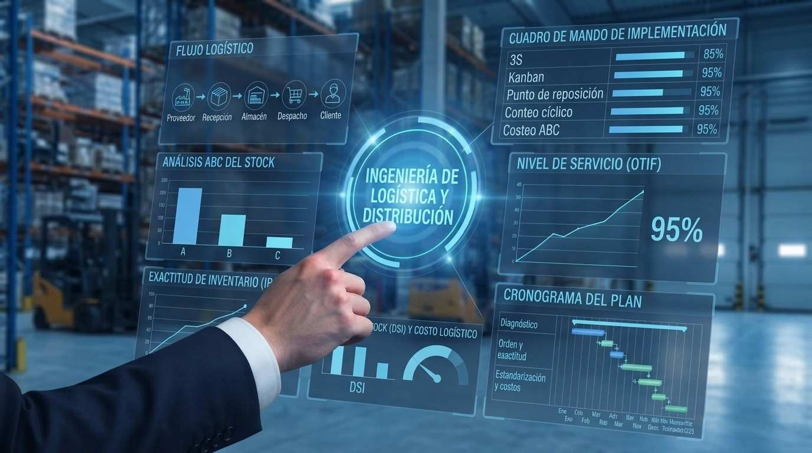

Antes de ampliar el depósito o sumar más stock, recuperá lo que hoy se pierde en él. Ordenamos el espacio, medimos el inventario y ayudamos a reducir esperas, errores de despacho y capital inmovilizado, con herramientas Lean y de gestión MBA.
Conocer más
Es la aplicación de herramientas Lean y de gestión MBA al flujo de materiales, al inventario y a los costos de un depósito, desde la recepción hasta el despacho. Está pensada para pymes manufactureras y distribuidoras de repuestos.
Un depósito desordenado o con inventario poco confiable genera faltantes, compras innecesarias, pedidos demorados y capital inmovilizado. Ordenar el flujo y medirlo con indicadores ayuda a mejorar el nivel de servicio, reducir costos logísticos y decidir con datos.
Recorremos recepción, almacenes, picking, embalaje y despacho para observar esperas, movimientos y errores. Clasificamos los desperdicios del depósito y definimos una línea base para priorizar las mejoras de alto impacto y bajo esfuerzo.
Acompañamos al personal del depósito durante todo el proceso: explicamos qué cambia y por qué, atendemos la resistencia desde el inicio y trabajamos para que los nuevos hábitos se sostengan cuando termina el acompañamiento.
Seleccionamos, ordenamos y limpiamos pasillos, estanterías, picking y muelles, con un lugar rotulado para cada código. Definimos la rotación FIFO o FEFO según el producto, para ayudar a reducir búsquedas, vencimientos y mercadería olvidada.
Clasificamos el inventario por valor y rotación para enfocar el control donde más impacta, y medimos el capital inmovilizado para decidir qué depurar. Instalamos conteos cíclicos y analizamos la causa de cada diferencia entre el stock físico y el del sistema.
Documentamos los procedimientos de recepción, ubicación, picking, embalaje y despacho, y sumamos controles a prueba de error, como validación por código de barras o listas de chequeo de carga, para ayudar a reducir errores de armado y despacho.
Para los códigos críticos definimos niveles mínimo y máximo, señales visuales o tarjetas Kanban y puntos de reposición con stock de seguridad. Así se repone según el consumo real, para ayudar a reducir faltantes y compras de urgencia.
Mapeamos el flujo completo, desde la orden al proveedor hasta el destino final, y ubicamos los cuellos de botella más costosos. Los abordamos con talleres de mejora y relacionamos el resultado con el margen o el costo de servicio por ruta, cliente o destino.
Mapeamos con Makigami los flujos de información entre Compras, Almacén, Facturación y transportistas para detectar burocracia y cargas duplicadas. Asignamos los costos a las actividades reales (costeo ABC) y acordamos niveles de servicio medibles entre sectores.
Seguimos días de stock, nivel de servicio, exactitud de inventario y costo logístico en un tablero. Sostenemos los estándares con auditorías cortas Kamishibai y reuniones diarias de pie, y medimos el retorno contra la línea base inicial.
Diseñamos planes flexibles y progresivos que se adaptan a la medida de tu depósito. Conocé la Modalidad Inicial y la Avanzada para transformar tu logística paso a paso.